اسم التطبيق: OffLink
المستخدمون المستهدفون: الأشخاص الذين يرغبون في إجراء مكالمات صوتية جماعية داخل نفس شبكة WiFi
تاريخ الإنشاء: 9 مارس 2026
آخر تحديث: 11 أبريل 2026
OffLink هو تطبيق يتيح لك إجراء مكالمات صوتية جماعية بدون إنترنت داخل نفس بيئة WiFi / نقطة اتصال. يوفر مكالمات صوتية منخفضة التأخير عبر اتصال P2P باستخدام WebRTC.
أمثلة على سيناريوهات الاستخدام:
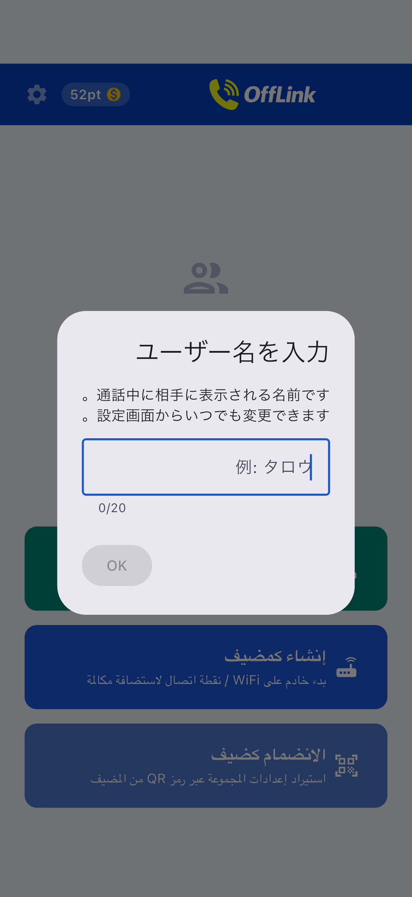
الشاشة الرئيسية بعد تشغيل التطبيق مباشرة.
يعمل OffLink في وضع WiFi LAN. يتم إجراء المكالمات بينما يكون الجميع متصلين بنفس شبكة WiFi.
ملاحظة: لا يلزم الاتصال بالإنترنت.
| الدور | الأجهزة المدعومة | الوصف |
|---|---|---|
| المضيف | Android / iPhone | الجهاز الذي يدير المكالمة |
| الضيف | Android / iPhone | الجهاز الذي ينضم إلى المكالمة |
تنبيه: يجب أن يكون الجميع متصلين بنفس شبكة WiFi.
| الإذن | الاستخدام | التأثير عند الرفض |
|---|---|---|
| الميكروفون | المكالمات الصوتية | لا يمكن إجراء المكالمات |
| الكاميرا | مسح رمز QR | لا يمكن تسجيل المجموعة عبر QR |
| الأجهزة القريبة (WiFi) ※Android | اكتشاف شبكة WiFi | لا يمكن اكتشاف المضيف |
| الموقع ※Android | مسح WiFi (متطلبات نظام التشغيل) | لا يمكن الحصول على SSID WiFi |
| Bluetooth ※Android | توصيل سماعة الرأس | لا يمكن استخدام سماعة الرأس |
| الإشعارات ※Android | إشعارات دعوة المكالمة | لا توجد إشعارات في الخلفية |
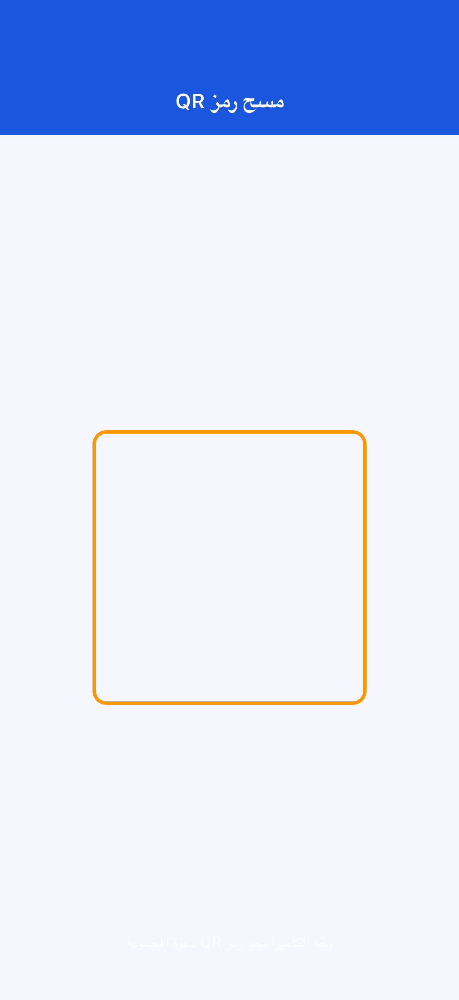
في حالة رفض الإذن: انتقل إلى "الإعدادات" → "التطبيقات" → "OffLink" لتغييرها.
الخطوة 1: اتصل الجميع بنفس WiFi
الخطوة 2: اضغط على "اتصل الآن" (الزر الأخضر)
الخطوة 3: أدخل اسم المستخدم
الخطوة 4: اختر الفئة وابدأ المكالمة
الخطوة 5: يتم إرسال إشعار دعوة المكالمة تلقائياً للأعضاء
الخطوة 1: اضغط على "إنشاء كمضيف" (الزر الأزرق)
الخطوة 2: أدخل اسم المجموعة وكلمة المرور ثم اضغط "إنشاء"

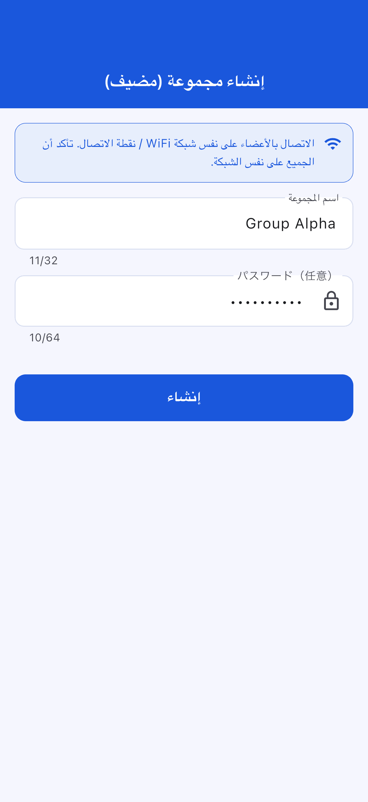
الخطوة 3: اختر إجراء الإنشاء
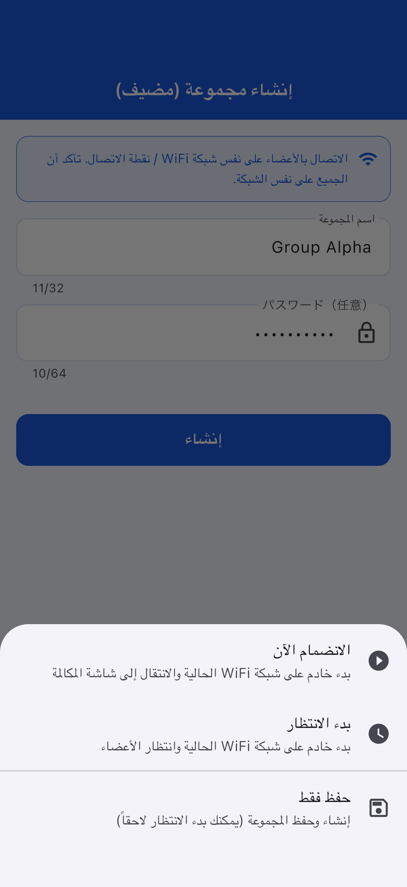
| الإجراء | الوصف |
|---|---|
| انضم الآن | تشغيل الخادم وبدء المكالمة |
| بدء الاستعداد | تشغيل الخادم والانتظار |
| حفظ فقط | يمكن البدء لاحقاً |
الخطوة 1: اضغط على "انضم كضيف" (الزر الأزرق الفاتح)
الخطوة 2: اختر طريقة الانضمام
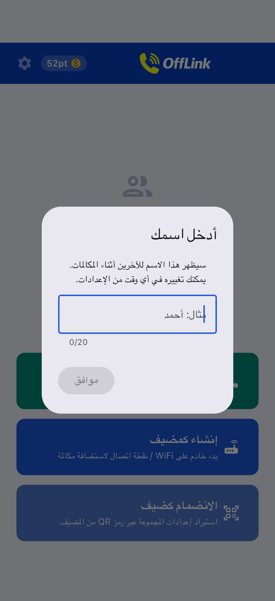
| الطريقة | العملية |
|---|---|
| 📱 مسح رمز QR | امسح رمز QR الخاص بالمضيف |
| 📋 لصق الرمز | الصق الرمز المشترك |
| ✏️ إدخال يدوي | أدخل مباشرة |
مشاركة رمز QR (جانب المضيف):

لصق الرمز (جانب الضيف):
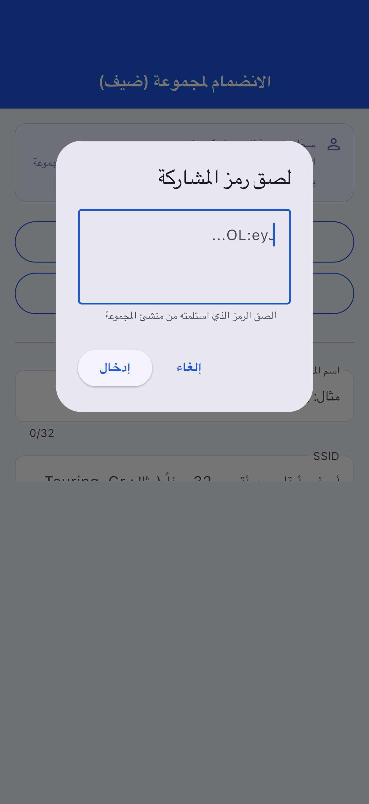
الخطوة 3: اضغط "تسجيل"
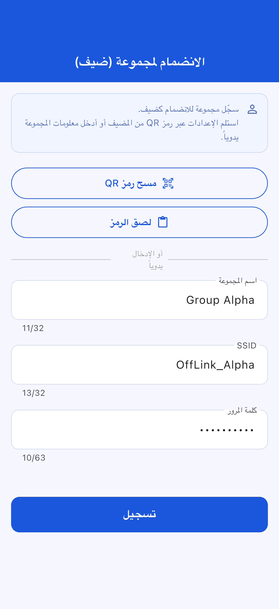
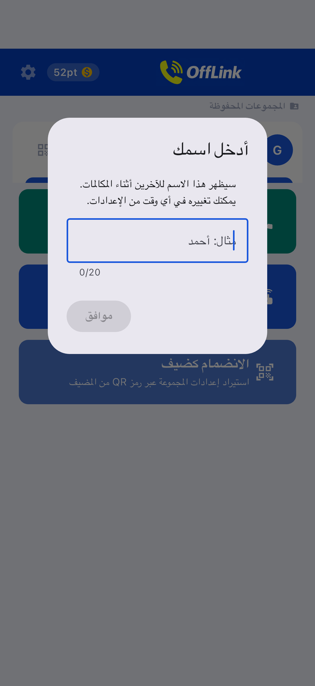
شاشة انضمام الضيف:
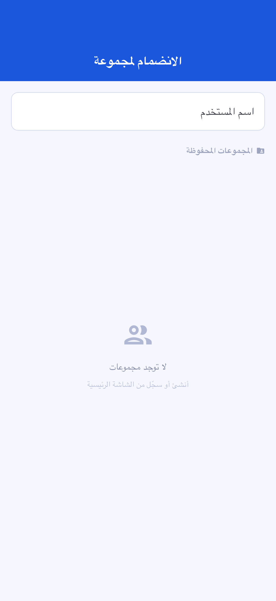
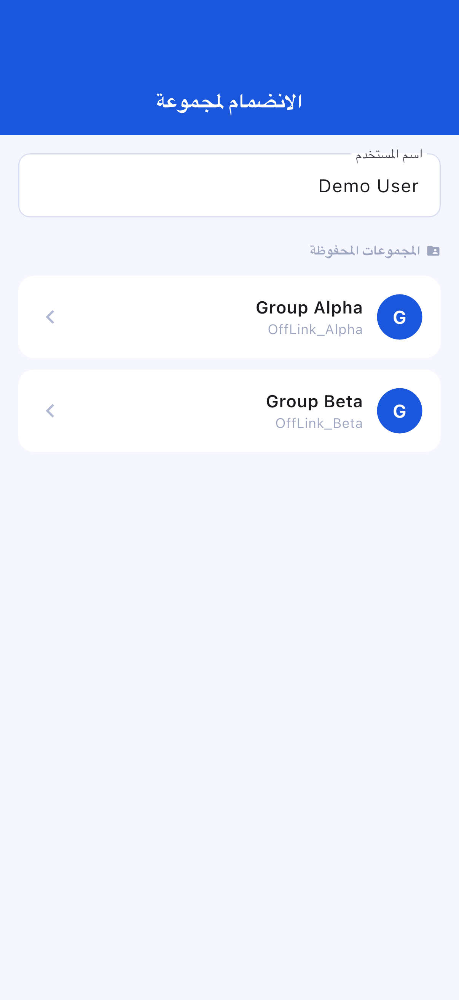
شاشة الاستعداد:
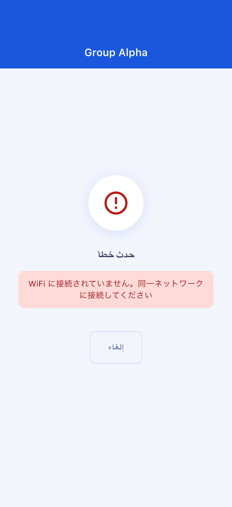
شاشة المكالمة:
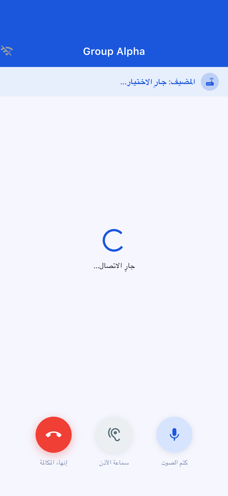
| الزر | الوظيفة |
|---|---|
| 🎤 كتم الصوت | تشغيل/إيقاف الميكروفون |
| 🔊 تبديل مخرج الصوت | مكبر الصوت / Bluetooth / سماعة الأذن |
| 🔴 إنهاء المكالمة | الخروج من المكالمة |
| الفئة | النقاط المستهلكة | الحد الأقصى للمشاركين |
|---|---|---|
| Standard | 10 نقاط | 4 أشخاص |
| Large | 20 نقطة | 10 أشخاص |
لا يمكن التشغيل التلقائي من داخل OffLink. قم بالإعداد يدوياً.
انتقل إلى "الإعدادات" → "التطبيقات" → "OffLink" → "الأذونات" لتغييرها
| العنصر | محتوى القيد |
|---|---|
| الحد الأقصى للمشاركين | Standard: 4 / Large: 10 |
| طريقة المكالمة | WiFi LAN فقط |
| الخلفية | قيود حسب الجهاز |
| حد حفظ المجموعات | Free: 5 / Premium: غير محدود |
| العنصر | الموصى به |
|---|---|
| Android | 5.0+ (API 21+) |
| iOS | 13.0+ |
| البطارية | يُوصى بـ 80% فأكثر |
| التخزين | 100MB فأكثر |
| WiFi | راوتر / نقطة اتصال / WiFi محمول |